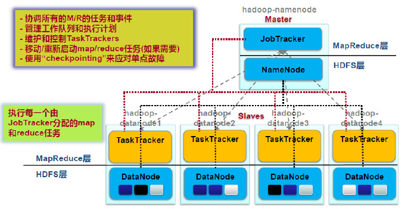

MPI
MPI是一个信息传递应用程序接口，包括协议和和语义说明。- 是为了处理进程间通讯的协议。
- 问题：
- 在
MapReduce出现之前，已经有像MPI这样非常成熟的并行计算框架了，那么为什么Google还需要MapReduce？ - 这是因为，传统并行计算框架基本上都还是在单机上，为了保证不易宕机，一般都选择昂贵的刀片服务器，而
MapReduce只需要普通的PC机，容错性好。
- 在
Hadoop架构
生态圈
MapReduce在Hadoop中位置
MapReduce
体系架构
Client提交作业：用户编写的MapReduce程序通过Client提交到JobTracker端作业监控：用户可通过Client提供的一些接口查看作业运行状态
JobTracker资源管理：监控TaskTracker与Job的状况。一旦发现失败，就将Task转移到其它节点作业调度：将Job拆分成Task，跟踪Task的执行进度、资源使用量等信息，由TaskScheduler调度（不是一个单独的进程，是一个模块）
TaskTracker执行操作：接收JobTracker发送过来的命令并执行（如启动新Task、杀死Task等）划分资源：使用“slot”等量划分本节点上的资源量（CPU、内存等），一个Task 获取到一个slot 后才有机会运行汇报信息：通过“心跳”将本节点上资源使用情况和任务运行进度汇报给JobTrackerMap slot->Map TaskReduce slot->Reduce Task
Task- 任务执行
Map taskReduce task
- 在Hadoop上，每个task为一个进程；而在spark上，为线程。
- 如何执行任务？
- 使用Java的反射和代理机制动态加载代码
- 任务执行
工作流程
- 不同的Map任务之间不会进行通信
- 不同的Reduce任务之间也不会发生任何信息交换
- 所有的数据交换都是通过MapReduce框架自身去实现的(Shuffle)
- 有多少个Reduce，就有多少个输出
物理流程
InputFormat
Split:- 逻辑概念，包含一些元数据信息，如数据起始位置、数据长度、数据所在节点等。
- 划分方法由用户决定。
InputFormat：- 定义了怎样与物理存储（如，HDFS block）之间的映射，理想的分片大小是一个HDFS块
- 如何划分？
- 如果map task的物理机上有需要的split，则采取就近原则
- 因为HDFS为强一致性，每个备份都完全相同
Map
- Map任务的数量
- Hadoop为每个split创建一个Map任务，split 的多少决定了Map任务的数目。
- 虽然用户在配置中可以自定义Map的数量，但并不起作用
- Mapper必须完成后才能被Reduce利用
- 指一个节点完成后，数据才可以被Reduce读取
- 但并不是所有的Map都要完成才能开始Reduce
Shuffle
Map端
- 分区
- 一个数据块分成几块部分
- 按照key分区，有几个reduce就分成几份
- 为shuffle做准备
- 排序
- 使得每个分区局部有序
- 让reduce可以直接归并（按照key），提高效率
- 合并
- Combine函数，由用户定义，不一定需要
- 可以对数据进行压缩，提高效率
Reduce端
- 领取数据
- Map完成后，jobtracker通知reduce领取数据
- 在hadoop中，是reduce主动去拉去数据
- 归并
- 当来自不同map处理后的数据放到reduce节点后，对其value进行归并，生成待处理的list。
- 如何确定shuffle到哪个Reduce？
- 通过哈希partition（对key哈希），选择对应的reduce物理机。
- 只要shuffle给Reduce数据，reduce就可以开始
- 但一定在shuffle之后结束
Reduce
- Reduce任务的数量
- 程序指定
- 最优的Reduce任务个数取决于集群中可用的reduce任务槽(slot)的数目
- 通常设置比reduce任务槽数目稍微小一些的Reduce任务个数（这样可以预留一些系统资源处理可能发生的错误）
序列化
- 序列化（Serialization）是指把结构化对象转化为字节流以便在网络上传输或在磁盘上永久存储的过程
- 反序列化（Deserialization）是指将将字节流转化为结构化对象的逆过程
- Java实现了序列化，但占用空间很大，因此，hadoop实现了自己的序列化方式:
Writable
与HDFS的关系

容错机制
- MapReduce容错和HDFS容错是两回事
- 由于Map的中间数据必须写入磁盘（为了容错），导致hadoop不能实时流计算。
- Map Task失败
- 重新执行Map任务
- 去HDFS重新读入数据
- Reduce Task失败
- 重新执行Reduce任务
- 去map重新读入数据
- TaskTracker失败
- JobTracker不会接收到“心跳”
- JobTracker会安排其他TaskTracker重新运行失败TaskTracker的任务
- JobTracker失败
- 最严重的失败，Hadoop没有处理JobTracker失败的机制，是个单点故障
- 所有任务需要重新运行